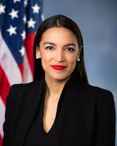

Ruth Bader Ginsberg First Jewish women and second women to serve as a Supreme Court Justice. "Women belong in all places where decisions are being made. It shouldn't be that women are the exception."
Michelle Obama First African American first lady of the United States, American attorney, author "Strong men, strong men, men who are truly role models, don’t need to put down women to make themselves feel powerful,"
Alice Guy Blache First women to direct a film, Co-founder of Solax Studios in Flushing, NY. “There is nothing connecting with the staging of a motion picture that a women cannot do as easily as a man.”
Bobbi Brown American professional makeup artist, bestselling author, public speaker, entrepreneur, and the founder of Bobbi Brown Cosmetics “I believe all women are pretty without makeup- but with the right makeup can be pretty powerful.”
Sara Blakely American businesswoman, entrepreneur, and philanthropist. She is the founder of Spanx “I think my story says that, when women are given the chance and the opportunity, that we can achieve a lot. We deliver.”
Oprah Winfrey American talk show host, television producer, actress, author, and philanthropist. “It doesn’t matter who you are, where you come from. The ability to triumph begins with you – always.”
Reece Witherspoon
American actress, producer, and entrepreneur. Co-founded Hello Sunshine, a production company dedicated to telling female stories
“My whole drive to be an actor was finding roles that I really believed represent modern women, the struggles that we deal with. Women who are strong and capable and in control of their own lives.”

Alexandria Ocasio-Cortez Youngest woman ever to serve in the United States Congress. American politician serving as the U.S. Representative for New York's 14th congressional district “The idea that a woman can be as powerful as a man is something that our society can’t deal with. But I am as powerful as a man and it drives them crazy.” 
Viola Davis American actress and producer known for her precise, controlled performances and her regal presence. "The internal sexism within womanhood is very ¬predominant in Hollywood, because we all want to be ¬successful. There's a plug to it: You all have to be skinny! You all have to be pretty! You all have to be likable, because that's the ¬formula that works. On an ¬executive level. On a power level. And it's not always the same working with black people, because of the internalized racism. The colorism."
Angela Merkel First female Chancellor of Germany “I might bend, but I will NEVER break it’s in my nature as a strong women.”
Serena Williams American professional tennis player and former world No. 1 in women's single tennis. She has won 23 Grand Slam singles titles, the most by any player in the Open Era, and the second-most of all time behind Margaret Court “The success of every woman should be the inspiration to another. We should raise each other up. Make sure you’re very courageous: be strong, be extremely kind, and above all be humble.”
Malala Yousafzai
Pakistani activist for female education and the youngest Nobel Prize laureate.
“No struggle can ever succeed without women participating side by side with men. There are two powers in the world; one is the sword and the other is the pen. There is a third power stronger than both, that of women”

Kimberle Crenshaw American lawyer, civil rights advocate, philosopher, and a leading scholar of critical race theory who developed the theory of intersectionality “Sexism isn’t a one-size-fits-all phenomenon. It doesn’t happen to black and white women the same way.”
Toni Morrison American novelist, essayist, book editor, and college professor. She won the Pulitzer Prize for Fiction for her novel 'Beloved' in 1988. She was awarded the Nobel Prize in Literature in 1993 for her novels “Women’s rights is not only an abstraction, a cause; it is also a personal affair. It is not only about us; it is also about me and you. Just the two of us.”
Vera Wang Arguably the most prominent designer of bridal wear in America, Wang has been honored with a number of accolades for her achievements, including the 1993 Chinese American Planning Council's Honoree of the Year Award and the 1994 Girl Scout Council's Woman of Distinction Award “That was a major goal for me – to be able to reach and encourage more women, to encourage them to express themselves and be what they want to be. People get very trapped where they are.”